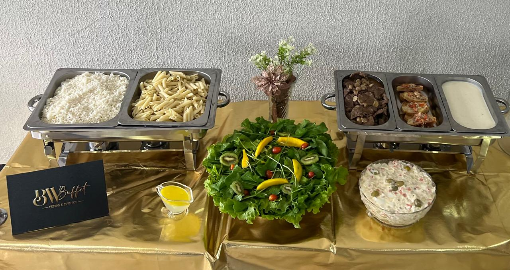

Maria José
-
"Os pães estavam incríveis, meus convidados amaram!"

"Os pães estavam incríveis, meus convidados amaram!"
"Mesas organizadissimas, meus convidados adoraram a decoração!"

"Comida excelente, meus convidados adoraram o buffet."
"Meus primos vegetarianos adoraram a parte das saladas, ficaram maravilhados pelas diversidades."

"O que eu estava mais ansioso seria para a parte de mousses na qual estava contratado."